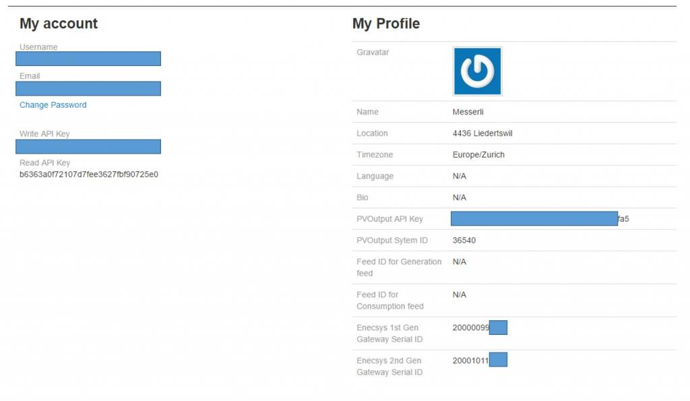

Hello. I am Dutch. We here in Holland are seaeching for a system tot monitor the enecsys inverters. Who of you has also enecsys and logs this with any system. Thank you for answer
»
Archived Forum |
|
Which system can monitor enecsys invertersSubmitted by Boem56 on Tue, 24/03/2015 - 17:36Hello. I am Dutch. We here in Holland are seaeching for a system tot monitor the enecsys inverters. Who of you has also enecsys and logs this with any system. Thank you for answer » |
Re: Which system can monitor enecsys inverters
I log 2nd Gen Enecsys systems we've installed with EmonCMS.
See examples here (sorry for the german screenshots):
http://swiss-solar-log.ch:85/ernst
http://swiss-solar-log.ch:85/ruedi
and my own one: http://swiss-solar-log.ch:85/firefox
In my example you also see that I log House consumption and also Weather information from my Weather station. :-)
If you have also 2nd Gen Enecsys Inverters you can visit my page http://swiss-solar-log.ch/
I'm still working on the solution as I also want to provide a simple dahsboard from within the gateway itself for all the people who don't want to use the cloud. The used linux on the gateway is very limited in functionality and I don't want to compile everything from scratch. But If you are willing to be a test candiate we can try to bring it also on to your system at no cost ;-)
If you have a 1st Generation system you can visit the Page from Stefan Engelbert
http://www.dataservices.solar/ He has built a solution for them.
Re: Which system can monitor enecsys inverters
I have installed 12 micro-inverter SMI-D480W-60 are this first generation ? Did You have solution to monitoring ?
Re: Which system can monitor enecsys inverters
Hi,
it's only ob English here?
I'am from Germany sind searchfor a Serversolution for the First Enecsys Generation like Swiss Solar log;-)
it's to expensive more than 40 Euro Ebers Year about Datenservices to pay!
than I netter Pay once more and have quit
greatings Partygans
Re: Which system can monitor enecsys inverters
@ David
Yes, these are the first Gen ones with dual input. At the moment I had the focus only on the 2nd Gen as I have more systems with them.
@ Partygans
Ich spreche auch Deutsch ;-)
At the moment my focus was solely on the 2nd Gen system. I'm still finishing the realtime dashboard on the gateway. When I have finished this I maybe have the time to also look for a solutions for the first generation series.
Gruss
Andreas Messerli
Re: Which system can monitor enecsys inverters
If you're a little bit more tech experienced, which I guess you are since you are here, then I can offer you a simple solution which needs a running pc or rasberrypi. The script will send the data to my EmonCMS instance. I now log 1st and 2nd Gens ;-)
I didn't had the time to do it more easy. I plan to create a Rpi Image with the script already running and a simple GUI to change the Write API and maybe the URL and even a local installed EmonCMS... something like this... lack of time at the moment... but the script is more or less running fine on my windows machine, collecting data since some days. Ah, and of course pvoutput.org is also planned to be integrated :-)
The changes on the 1st Gen gateway are minimal. Just exchange the server URL from Enecsys to your local RPI IP....
Contact me if you want to know more or have a specific use case.
Re: Which system can monitor enecsys inverters
I would like to know more about the exciting project you're doing.
I just discovered that I can't follow my micro invertor any more, and all data is lost.
The time I bought mine in 2012 I thought well enough that if they went bankrupt, you will not be able to follow the invertor :(
It vill be nice if you did not depend on anyone.
Hope you can help me :)
/Esben Wøldike
Denmark
Re: Which system can monitor enecsys inverters
Hi
The details for the 2nd Gen Monitoring are outlined on my page. http://swiss-solar-log.ch/
At the moment I also work on finalizing the 1st Gen Monitoring to bring it on EmonCMS too. It seems to work stable now for 3 Test systems and 16x 1st Gen Inverters. I have to solve some small issues but it's looking promising!
If you like to be beta tester too let me know. I still have to find a solution to also send this data to PVoutput.org like I do for the 2nd Gens. But I have to do it via Feed from EmonCMS with a scheduled job or something like this. The 1st Gens do not transmit always the data of all inverters together. So I need to build a check which checks for all inverters and "accurate" data and then sending it. But I will find a practical way for it.
If you need just local monitoring without dashboards etc. for the 1st Gens I do not have a solution to monitor them "offline". Best to maybe contact Ben Fischer from Fischer Solar: http://www.fischersolar.com/ He has a cool piece of software which allows to monitor them locally.
Regards
Andreas
Re: Which system can monitor enecsys inverters
I use MaxSunshine https://enecsys-monitoring.com/ . They are about the same price as Stefans, but dont have the adds. I prefer their charts and they are very helpful with any questions.
Re: Which system can monitor enecsys inverters
See here for a nice little self contained independent monitoring system for Enecsys GEN 1 Micro Inverters.
Click on image for live demonstration
Re: Which system can monitor enecsys inverters
Hello, I am looking for a monitoring solution for my father in law who has solar panels with an Enecsys gateway. Since Enecsys shut down the business the monitoring Website by Enecsys is not working anymore. I am looking for a local solution based on a RaspberryPi, the available Enecsys gateway, loging into a database and some dashboards in the RPi. It looks like that you achieved this with the EmonCMS. Can you give me some tips and tutorials, how to set up the Enecsys Gateway, the RaspberryPi and EmonCMS to get it locally working? Many thanks in advance, Christian
Re: Which system can monitor enecsys inverters
Hi. I too am looking for a cost effective solution to enable me to again be able to monitor the performance of the Enecsys Micro Inverters. I am based in the UK and my system has 16 panels (4Kw in total) each with its own micro inverter. Any ideas/ help appreciated.
[Duplicate post deleted - Moderator (RW)]
Re: Which system can monitor enecsys inverters
See link below for a perl script that decodes the inverter data sends it to EmonCMS. Its easy to implement of a raspberry pi! ! SO total outlay is 30 squid. NOTE it requires the Enecsys Data Receiver.
https://www.navitron.org.uk/forum/index.php?topic=18276.165
See replay Reply #177 on: April 23, 2015, 11:20:50 PM from SolarBOB.
And Thanks must go to SolarBob for this perl script.
The sample perl script ONLY sends Inverter Serial number and AC Power but all values available are decoded! So adapt to suit your needs. I loge all 16 panels as individual nodes and then report of the data! NOTE By default EmonCMS only supports 32 Nodes!
I am looking for someone who has a redio receiver for the PI so I can remove the Enecsys Data Receiver.
Re: Which system can monitor enecsys inverters
Hello all,
for 1st Gen I found also following alternative approach based on PHP:
https://github.com/omoerbeek/e2pv
I am not forwarding the input to PVOutput but managed to log the data into MySQL.
Following Dashboard showed also the current values based on this data:
https://github.com/nlmaca/Enecsys_Dashboard
Next step would be now to forward the data to localhost EmonCMS installation (instead to PVOutput).
I am just trying to install EmonCMS but I got the following error message:
Does anyone have an idea what the reason is and how I can solve it?
Thanks in advance,
Christian
Re: Which system can monitor enecsys inverters
Hi, I have a site www.enecsys-monitoring.com that uses the existing gateway with minor configuration changes and stores all of your data complete with reporting. It is subscription based but is cheaper than the Rasberry Pi option or the electricity to run the computer to monitor your system locally.
Re: Which system can monitor enecsys inverters
Hi All,
If you still having issues checking the output of your enecsys inverters, check this pdf and follow the instructions.
It worked with my inverters. 1st Gen only.
http://www.fischersolar.com/files/instructions.pdf
Duplicate post deleted - Moderator, BT
Re: Which system can monitor enecsys inverters
We have built a system which can do that work
Check more information below.
http://www.airosoftware.com/enecsys.php
Re: Which system can monitor enecsys inverters
Hello airo,
I didn't have time in the meantime to work on it again. Your solution looks quite promising. Is it possible to download it somewhere and try it out?
Christian
Re: Which system can monitor enecsys inverters
Hi
I have the Enecsys system with microinverters, and i need to download a system that will help me monitor what I'm generating, How do i know if i have the first or second generation?
Re: Which system can monitor enecsys inverters
Hi Christian.
I installed e2pv (PHP based), but i have a question.
How i setup my Gen1 Enecsys Gateway to send data to e2pv?
How you setup your enecsys gateway?
Tks. Regards.
Re: Which system can monitor enecsys inverters
Hi, I monitor my enecsys inverters on the website www.enecsysoutput.com
it looks like a new service, but I think it is a good alternative.
Mitz
Re: Which system can monitor enecsys inverters
I'd like to log locally to an EmonCMS pi but also forward the data to an online service, is this possible?
Re: Which system can monitor enecsys inverters
Depends on the Generation you use. The advertised solutions above do not even have something to do with emoncms.
For 1st Gens there are a lot of scripts around and solutions which allows you to get the data locally. It's then easy to send the data to whatever you want.
The 2nd Gen needs more backend work and an adapted image to solve the constant reboots since the enecsys server is missing. Without that it's almost constantly rebooting every 30mins and it takes, depending on the data amount already stored, up to 5-6mins until it's rebooted up again and sending data.
My solution is built on top of emoncms and uses my backend server scripts to receive the data for 1st and 2nd Gen data.You can even send feeds to pvoutput.org if you like. I've enhanced my emoncms clone with the possibility to do that:

More than 1200 inverters of 1st and 2nd Gen Generation are monitoring to my site so far.